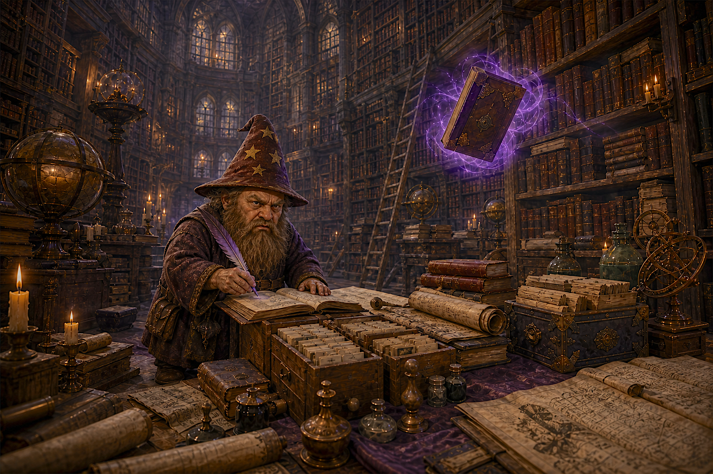

Malgrin is curating now
Bad Wizard Games presents
The Board Game Archive
A living gallery of tabletop curiosities, legendary mechanisms, and games worth gathering around. Every entry is weighed, annotated, and filed under Malgrin's watchful eye.

On the curator's deskReviewing mechanics and forgotten rulebooks
Archive statusLive · Shelves shifting daily
Curated byMalgrin, Keeper of Questionable Classics
The live compendium
Browse Malgrin's shelves
Search the collection, inspect the records, and see what the curator has rescued from obscurity.